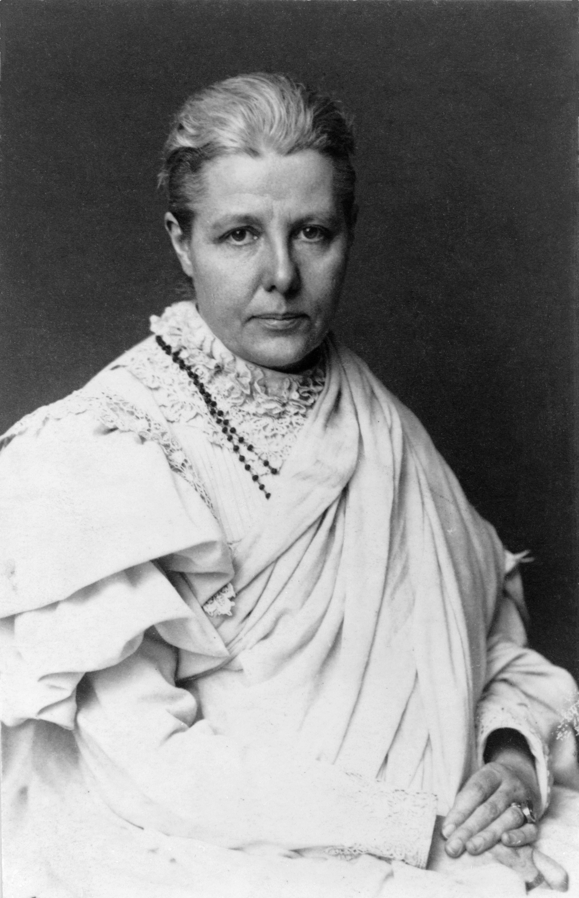
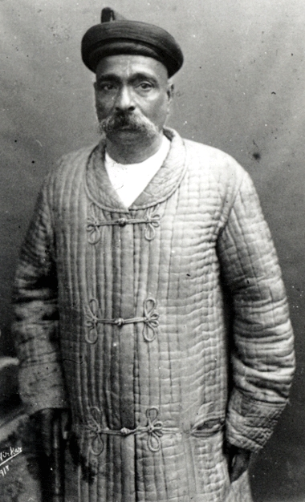
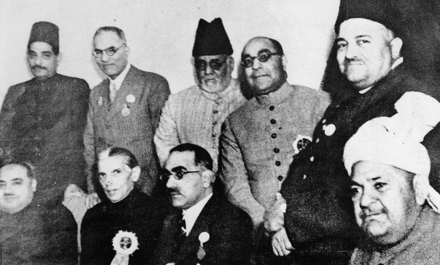

| Item | Tilak's League | Besant's League |
|---|---|---|
| Founded | April 1916 | September 1916 |
| Headquarters | Poona (Pune) | Madras (Chennai) |
| Coverage | Maharashtra, Karnataka, Berar, CP | Rest of India (Bombay, UP, Bihar, etc.) |
| Newspapers | Kesari (Marathi), Mahratta (English) | New India (daily), Commonweal (weekly) |
| Demand | Self-government (Swaraj) within the Empire | Same — self-government within the Empire |
| Methods | Public meetings, libraries, reading rooms, newspapers | Same — plus schools, propaganda |


| Item | Detail |
|---|---|
| Date | December 1916 |
| Session | 1916 Lucknow INC session (presided by Ambika Charan Mazumdar) |
| Parties | Indian National Congress & All India Muslim League |
| Architects | Tilak (Congress) and Muhammad Ali Jinnah (League, then a Congressman-Nationalist) |
| Key terms | (1) Separate electorates for Muslims accepted; (2) One-third Muslim representation in legislatures; (3) No Muslim bill could pass if 3/4 of Muslim members opposed; (4) Joint demand for self-government |
| Significance | High-water mark of Hindu-Muslim political unity before 1947 |

| Achievement | Detail |
|---|---|
| 1. Reunification | Moderates and Extremists reunited after 9 years of split (since 1907 Surat Split). Tilak returned from Mandalay (released 1914) and was welcomed back. |
| 2. Lucknow Pact | Congress-League agreement on joint political demands and Muslim representation. Engineered by Tilak and Jinnah. |
| President | Ambika Charan Mazumdar (Moderate Bengali leader) |
From Tilak's release (1914) to the movement's decline (1918).
| Item | Value | Notes |
|---|---|---|
| Tilak's League | April 1916, Poona | Maharashtra, Karnataka, Berar, CP |
| Besant's League | September 1916, Madras | Rest of India |
| Demand | Self-government within the Empire | NOT complete independence |
| Lucknow Pact | December 1916 | Congress-League unity |
| Pact architects | Tilak (Congress) + Jinnah (League) | Jinnah was then a Congressman-Nationalist |
| 1916 INC President | Ambika Charan Mazumdar | Moderate Bengali leader |
| Reunification | 1916 Lucknow | Moderates + Extremists, after 9 years (since 1907) |
| Besant arrested | June 1917 | Released August 1917 under pressure |
| Montagu Declaration | August 20, 1917 | "Gradual development of self-governing institutions" |
| Besant INC President | 1917 Calcutta | First woman President |
| Besant visits Bihar | 1918 | 71st BPSC PYQ — Home Rule League strengthening |
| Tilak's slogan | "Swaraj is my birthright" | Rallying cry of Home Rule |